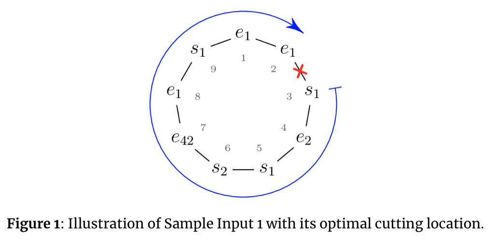

You have an internship with a bioinformatics research group studying DNA. A single strand of DNA consists of many genes, which fall into different categories called $gene$ $types$. Gene types are delimited by specific nucleotide sequences known as $gene$ $markers$. Each gene type $i$ has a unique start marker $\texttt{s}_i$ and a unique end marker $\texttt{e}_i$. After many dirty jobs (growing bacteria, cell extraction, protein engineering, and so on), your research group can convert DNA into a form consisting of only the gene markers, removing all the genetic material lying between the markers.
Your research group came up with the interesting hypothesis that gene interpretation depends on whether the markers of some gene types form properly nested structures. To decide whether markers of gene type $i$ form a proper nesting in a given sequence of markers $w$, one needs to consider the subsequence of $w$ containing only the markers of gene type $i$ $(\texttt{s}_i$ and $\texttt{e}_i$), leaving none of them out. The following (and only the following) are considered to be properly nested structures:
Given your computing background, you were assigned to investigate this property, but there is one further complication. Your group is studying a specific type of DNA called circular DNA, which is DNA that forms a closed loop. To study nesting in circular DNA, it is necessary to cut the loop at some location, which results in a unique sequence of markers (the direction of reading is fixed by molecular properties). Whether a gene type $i$forms a proper nesting now also depends on where the circular DNA is cut. Your task is to find the cutting location that maximizes the number of gene types that form a properly nested structure. Figure 1 shows an example corresponding to Sample Input 1. The indicated cut results in the markers for gene type $1$ being properly nested.

 Comet OJ
Comet OJ